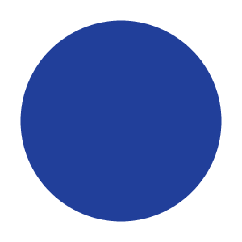

<!DOCTYPE html>
<html>
  <head>
    <title>My experiment</title>
    <script src="jspsych-6.1.0/jspsych.js"></script>
    <script src="jspsych-6.1.0/plugins/jspsych-html-keyboard-response.js"></script>
    <script src="jspsych-6.1.0/plugins/jspsych-image-keyboard-response.js"></script>
    <script src="jspsych-6.1.0/plugins/jspsych-reconstruction.js"></script>
    <script src="jspsych-6.1.0/plugins/jspsych-image-slider-response.js"></script>
    <link href="jspsych-6.1.0/css/jspsych.css" rel="stylesheet" type="text/css"></link>
  </head>
  <body></body>
  <script>

    /* create timeline */
    var timeline = [];

    /* define welcome message trial */
    var welcome = {
      type: "html-keyboard-response",
      stimulus: "Welcome to the experiment. Press any key to begin."
    };


    /* define instructions trial */
    var instructions = {
      type: "html-keyboard-response",
      stimulus: "<p>In this experiment, a circle will appear in the center " +
          "of the screen.</p><p>If the circle is <strong>blue</strong>, " +
          "press the letter F on the keyboard as fast as you can.</p>" +
          "<p>If the circle is <strong>orange</strong>, press the letter J " +
          "as fast as you can.</p>" +
          "<div style='width: 700px;'>"+
          "<div style='float: left;'></img>" +
          "<p class='small'><strong>Press the F key</strong></p></div>" +
          "<div class='float: right;'></img>" +
          "<p class='small'><strong>Press the J key</strong></p></div>" +
          "</div>"+
          "<p>Press any key to begin.</p>",
      post_trial_gap: 2000
    };


    /* test trials */

    var test_stimuli = [
      { stimulus: "img/blue.png", data: { test_part: 'test', correct_response: 'f' } },
      { stimulus: "img/orange.png", data: { test_part: 'test', correct_response: 'j' } }
    ];

    var fixation = {
      type: 'html-keyboard-response',
      stimulus: '<div style="font-size:60px;">+</div>',
      choices: jsPsych.NO_KEYS,
      trial_duration: function(){
        return jsPsych.randomization.sampleWithoutReplacement([250, 500, 750, 1000, 1250, 1500, 1750, 2000], 1)[0];
      },
      data: {test_part: 'fixation'}
    }

    var test = {
      type: "image-keyboard-response",
      stimulus: jsPsych.timelineVariable('stimulus'),
      choices: ['f', 'j'],
      data: jsPsych.timelineVariable('data'),
      on_finish: function(data){
        data.correct = data.key_press == jsPsych.pluginAPI.convertKeyCharacterToKeyCode(data.correct_response);
      },
    }
    
    var sample_function = function(param){
        var size = 50 + Math.floor(param*250);
        var html =  
           '<p style="font-family:arial;"><b>How much did you want to earn money for <br>self versus charity?</b></p>'+
            '<p style="font-family:arial;"><font size="3">Press "G" and "H" to respond below</p>'+
           '<p style="font-family:arial;"><font size="3">more <b><font color="FFA500">orange</font></b> = more self</p>'+ 
           '<p style="font-family:arial;"><font size="3">more <b><font color="6495ED">blue</font></b> = more charity</p>'+           '<font color="DCDCDC">.</font>'+
            '<div style="display: block; margin: auto;">'+
        '<div style="display: block; position: absolute; align: center; margin: auto; background-color:  #6495ED; '+
        'width: '+350+'px; height: '+35+'px;"></div></div>'+
            '<div style="display: block; margin: auto; height: 50px;">'+
        '<div style="display: block; position: absolute; align: center; margin: auto; background-color:  #FFA500; '+
        'width: '+size+'px; height: '+35+'px;"></div></div><br>'
        return html;
    }

    var trial = {
        type: 'reconstruction',
        stim_function: sample_function,
        starting_value: 0.50
    }
    timeline.push(trial);
    
    var test_procedure = {
      timeline: [fixation, test],
      timeline_variables: test_stimuli,
      repetitions: 5,
      randomize_order: true
    }
    timeline.push(test_procedure);

    /* define debrief */

    var debrief_block = {
      type: "html-keyboard-response",
      stimulus: function() {

        var trials = jsPsych.data.get().filter({test_part: 'test'});
        var correct_trials = trials.filter({correct: true});
        var accuracy = Math.round(correct_trials.count() / trials.count() * 100);
        var rt = Math.round(correct_trials.select('rt').mean());

        return "<p>You responded correctly on "+accuracy+"% of the trials.</p>"+
        "<p>Your average response time was "+rt+"ms.</p>"+
        "<p>Press any key to complete the experiment. Thank you!</p>";

      }
    };
      
    timeline.push(debrief_block);

    /* start the experiment */
    jsPsych.init({
      timeline: timeline,
      on_finish: function() {
        jsPsych.data.displayData();
      }
    });
  </script>
</html>